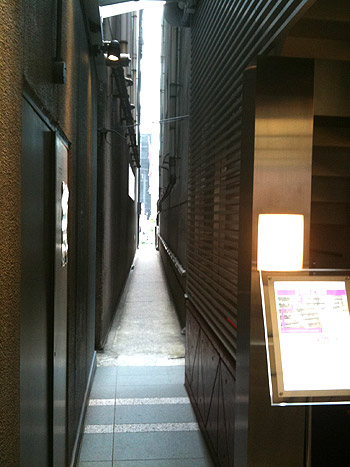
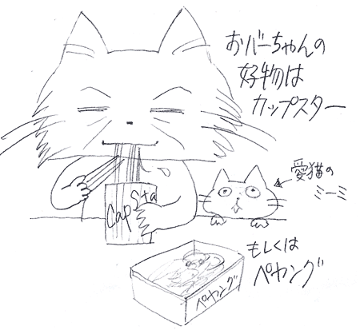
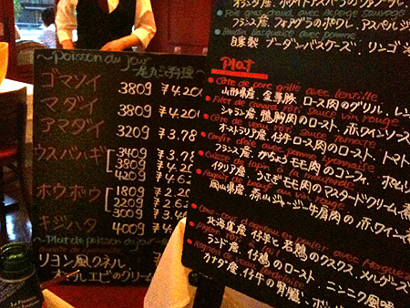

かに風味ブログ
-
梅雨のワイン会
twitter利用者限定無料ワイン試飲会とゆーのに参加しました。 場所はこちら「ワイズワインギャラリー」 中央通りのティファニーと英国屋の間を入ったとこにあるお店…って「そんなとこに道があったっけなー…

-
トックリキワタとわたくし
ぽあぽあの綿にくるまれた丸い種を土に植えてはや3年。 何個か植えたのに、芽が出たのはひとつだけだったなぁ… っていうか、今になってあれこれ調べてみると、意外と発芽条件が難しかったり、種子の一部を傷付…

-
07/03のツイートまとめ
kaniaji さて、vironでバゲット買って帰るかな。 07-03 16:16 ワイン会終了！バーニーズに移動！飲んだくれで銀座を歩くのは楽しいにゃーー 07-03 15:32

-
07/01のツイートまとめ
kaniaji 梅仕事に振り回されて早く帰りまする。梅、追加しよかな。 07-01 17:19 1名参加です。まだ間に合うかしらん？ RT @bunya_takao [ワイズ×ラフィネ 銀座なう！…
-
06/30のツイートまとめ
kaniaji 図書館ラッキー継続中。井上雄彦のリアル全巻入手。泣けるー！ 06-30 22:31
-
06/29のツイートまとめ
kaniaji どっきどきで血圧上がるわー 06-29 23:37 @matchan4649 ぐふふ。爽快な感じで羨ましかった！チャレンジかぁーf^_^;) 06-29 23:35 そーいえば…
-
はさまれ猫
かわええ 猫ってなんでこーもおっちょこちょいなのか。 挟まれたり、落っこちたり、高いトコから降りられなくなったり。 まーそこが可愛いんだけどね。 実家で飼っていたねこも、近所の倉庫に忍び込んで出ら…
-
06/28のツイートまとめ
kaniaji なんか思いつきでベッドの位置を変えてみた。部屋のど真ん中どーん！ 06-28 22:43 花の子ルンルンが追い求めたものはこれかー http://twitpic.com/20lb2…
-
06/27のツイートまとめ
kaniaji 早起き！この時間ってテレビショッピングだらけなんだねー。朝から誘惑… 06-27 05:26
-
06/26のツイートまとめ
kaniaji 【今日のポタリング】おっぱい丸出しのおばちゃんを見る。 06-26 17:49 【今日のポタリング】上野の裏道でタクシーの運ちゃんにイイ銭湯を勧められる。井戸水使ってるって。@燕湯…
-
06/25のツイートまとめ
kaniaji 台湾産のアップルマンゴー買ってきた！食べた！うー！やっぱり現地じゃないとあの味じゃないのね！ 06-25 21:17
-
06/24のツイートまとめ
kaniaji 他人が作ったコードをいじるのって、ひとんち荒らしているよーな気分になるんですが。 06-24 12:11
-
06/23のツイートまとめ
kaniaji あー。昼が長いのも今のうちー。まだちょびっと明るいうちに帰るっていいなー。 06-23 19:14 隅田川花火大会のマナーページが、遠足前の校長先生のお話みたいでちょっとイイ。～な…
-
06/22のツイートまとめ
kaniaji 王将のギョーザ食べに行く！何年ぶりかしらー。らら～♪ 06-22 19:36 今日のお弁当はホットサンド（玉子とトマト）とチキンナゲット、トマトスープ。緑色に乏しいからスキマに紫蘇…
-
脂好き90歳。健康のひけつ
なんどかウチのオバーちゃんの豪傑っぷりを書いているのだけど、 90過ぎても相変わらず。 好物はカップスター（なぜかカップヌードルはダメらしい） たまにペヤング（UFOはダメらしい） まれにどん兵衛（…

-
06/21のツイートまとめ
kaniaji うむ！380円ワインは良くも悪くも安ワインの味。でもこの価格帯はありえん。980円でも似たような味あり。冷やして飲むのがよし。 06-21 23:04 私が育てているトックリキワタ…
-
06/20のツイートまとめ
kaniaji 図書館から借りた台湾鉄道完全ガイドがイイ！振子式特急太魯閣乗りたいなー。私が大好きなJR九州のかもめー！台鉄イイ… 06-20 23:33 図書館で借りてきたニャ夢ウェイがおもろい…
-
オランダ戦とワインとMJ
日本全国大盛り上がりのワールドカップオランダ戦当日にもかかわらず、TOKIAで食事。 白レバムースと鴨ロースト、オランダ戦だとゆーことでオランダ産のホワイトアスパラ なんか魚も美味しそうだなー 白…

-
家族焼肉
弟＆妹のオゴリで焼肉！ホルモン！ こんな日が来るとはなー。 ちなみに親には焼肉屋さんに連れて行ってもらったことありませんの。 外食ってラーメンか蕎麦屋かファミレスかって感じだったのよね。 だから、今…

-
06/19のツイートまとめ
kaniaji パブリックビューイング帰り。行くつもりなかったけど、行ったら行ったで楽しいな。試合後、久しぶりに踊ったー http://twitpic.com/1y5126 06-19 23:37 …